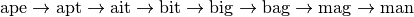
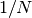

Compressed Sparse Graph Routines scipy.sparse.csgraph¶
Example: Word Ladders¶
A Word Ladder is a word game invented by Lewis Carroll in which players find paths between words by switching one letter at a time. For example, one can link “ape” and “man” in the following way:

Note that each step involves changing just one letter of the word. This is just one possible path from “ape” to “man”, but is it the shortest possible path? If we desire to find the shortest word ladder path between two given words, the sparse graph submodule can help.
First we need a list of valid words. Many operating systems have such a list built-in. For example, on linux, a word list can often be found at one of the following locations:
/usr/share/dict
/var/lib/dict
Another easy source for words are the scrabble word lists available at various sites around the internet (search with your favorite search engine). We’ll first create this list. The system word lists consist of a file with one word per line. The following should be modified to use the particular word list you have available:
>>> word_list = open('/usr/share/dict/words').readlines()
>>> word_list = map(str.strip, word_list)
We want to look at words of length 3, so let’s select just those words of the correct length. We’ll also eliminate words which start with upper-case (proper nouns) or contain non alpha-numeric characters like apostrophes and hyphens. Finally, we’ll make sure everything is lower-case for comparison later:
>>> word_list = [word for word in word_list if len(word) == 3]
>>> word_list = [word for word in word_list if word[0].islower()]
>>> word_list = [word for word in word_list if word.isalpha()]
>>> word_list = map(str.lower, word_list)
>>> len(word_list)
586
Now we have a list of 586 valid three-letter words (the exact number may change depending on the particular list used). Each of these words will become a node in our graph, and we will create edges connecting the nodes associated with each pair of words which differs by only one letter.
There are efficient ways to do this, and inefficient ways to do this. To do this as efficiently as possible, we’re going to use some sophisticated numpy array manipulation:
>>> import numpy as np
>>> word_list = np.asarray(word_list)
>>> word_list.dtype
dtype('|S3')
>>> word_list.sort() # sort for quick searching later
We have an array where each entry is three bytes. We’d like to find all pairs where exactly one byte is different. We’ll start by converting each word to a three-dimensional vector:
>>> word_bytes = np.ndarray((word_list.size, word_list.itemsize),
... dtype='int8',
... buffer=word_list.data)
>>> word_bytes.shape
(586, 3)
Now we’ll use the
Hamming distance
between each point to determine which pairs of words are connected.
The Hamming distance measures the fraction of entries between two vectors
which differ: any two words with a hamming distance equal to ,
where  is the number of letters, are connected in the word ladder:
is the number of letters, are connected in the word ladder:
>>> from scipy.spatial.distance import pdist, squareform
>>> from scipy.sparse import csr_matrix
>>> hamming_dist = pdist(word_bytes, metric='hamming')
>>> graph = csr_matrix(squareform(hamming_dist < 1.5 / word_list.itemsize))
When comparing the distances, we don’t use an equality because this can be unstable for floating point values. The inequality produces the desired result as long as no two entries of the word list are identical. Now that our graph is set up, we’ll use a shortest path search to find the path between any two words in the graph:
>>> i1 = word_list.searchsorted('ape')
>>> i2 = word_list.searchsorted('man')
>>> word_list[i1]
'ape'
>>> word_list[i2]
'man'
We need to check that these match, because if the words are not in the list that will not be the case. Now all we need is to find the shortest path between these two indices in the graph. We’ll use dijkstra’s algorithm, because it allows us to find the path for just one node:
>>> from scipy.sparse.csgraph import dijkstra
>>> distances, predecessors = dijkstra(graph, indices=i1,
... return_predecessors=True)
>>> print distances[i2]
5.0
So we see that the shortest path between ‘ape’ and ‘man’ contains only five steps. We can use the predecessors returned by the algorithm to reconstruct this path:
>>> path = []
>>> i = i2
>>> while i != i1:
>>> path.append(word_list[i])
>>> i = predecessors[i]
>>> path.append(word_list[i1])
>>> print path[::-1]
['ape', 'apt', 'opt', 'oat', 'mat', 'man']
This is three fewer links than our initial example: the path from ape to man is only five steps.
Using other tools in the module, we can answer other questions. For example, are there three-letter words which are not linked in a word ladder? This is a question of connected components in the graph:
>>> from scipy.sparse.csgraph import connected_components
>>> N_components, component_list = connected_components(graph)
>>> print N_components
15
In this particular sample of three-letter words, there are 15 connected components: that is, 15 distinct sets of words with no paths between the sets. How many words are in each of these sets? We can learn this from the list of components:
>>> [np.sum(component_list == i) for i in range(15)]
[571, 1, 1, 1, 2, 1, 1, 1, 1, 1, 1, 1, 1, 1, 1]
There is one large connected set, and 14 smaller ones. Let’s look at the words in the smaller ones:
>>> [list(word_list[np.where(component_list == i)]) for i in range(1, 15)]
[['aha'],
['chi'],
['ebb'],
['ems', 'emu'],
['gnu'],
['ism'],
['khz'],
['nth'],
['ova'],
['qua'],
['ugh'],
['ups'],
['urn'],
['use']]
These are all the three-letter words which do not connect to others via a word ladder.
We might also be curious about which words are maximally separated. Which two words take the most links to connect? We can determine this by computing the matrix of all shortest paths. Note that by convention, the distance between two non-connected points is reported to be infinity, so we’ll need to remove these before finding the maximum:
>>> distances, predecessors = dijkstra(graph, return_predecessors=True)
>>> np.max(distances[~np.isinf(distances)])
13.0
So there is at least one pair of words which takes 13 steps to get from one to the other! Let’s determine which these are:
>>> i1, i2 = np.where(distances == 13)
>>> zip(word_list[i1], word_list[i2])
[('imp', 'ohm'),
('imp', 'ohs'),
('ohm', 'imp'),
('ohm', 'ump'),
('ohs', 'imp'),
('ohs', 'ump'),
('ump', 'ohm'),
('ump', 'ohs')]
We see that there are two pairs of words which are maximally separated from each other: ‘imp’ and ‘ump’ on one hand, and ‘ohm’ and ‘ohs’ on the other hand. We can find the connecting list in the same way as above:
>>> path = []
>>> i = i2[0]
>>> while i != i1[0]:
>>> path.append(word_list[i])
>>> i = predecessors[i1[0], i]
>>> path.append(word_list[i1[0]])
>>> print path[::-1]
['imp', 'amp', 'asp', 'ask', 'ark', 'are', 'aye', 'rye', 'roe', 'woe', 'woo', 'who', 'oho', 'ohm']
This gives us the path we desired to see.
Word ladders are just one potential application of scipy’s fast graph algorithms for sparse matrices. Graph theory makes appearances in many areas of mathematics, data analysis, and machine learning. The sparse graph tools are flexible enough to handle many of these situations.